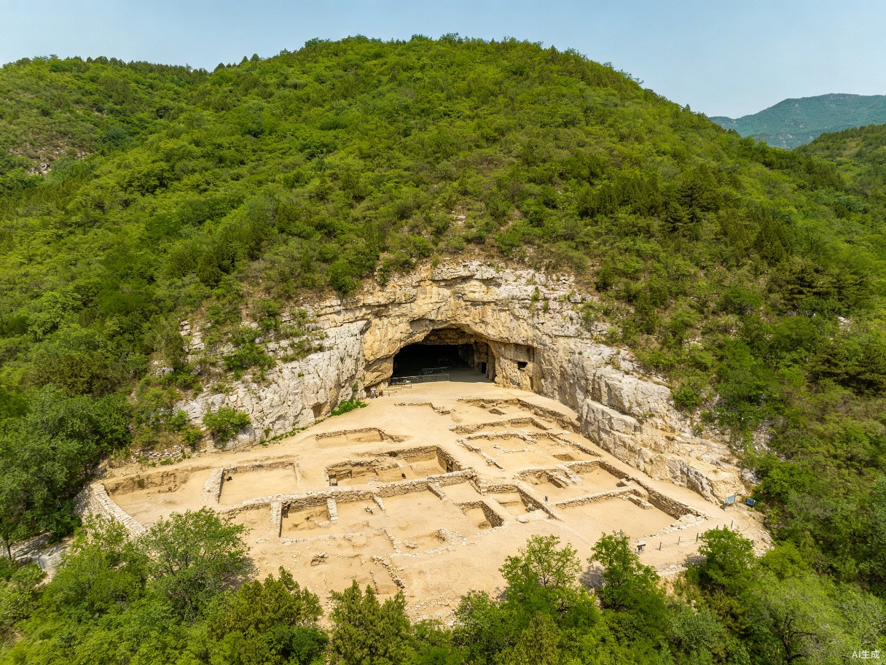
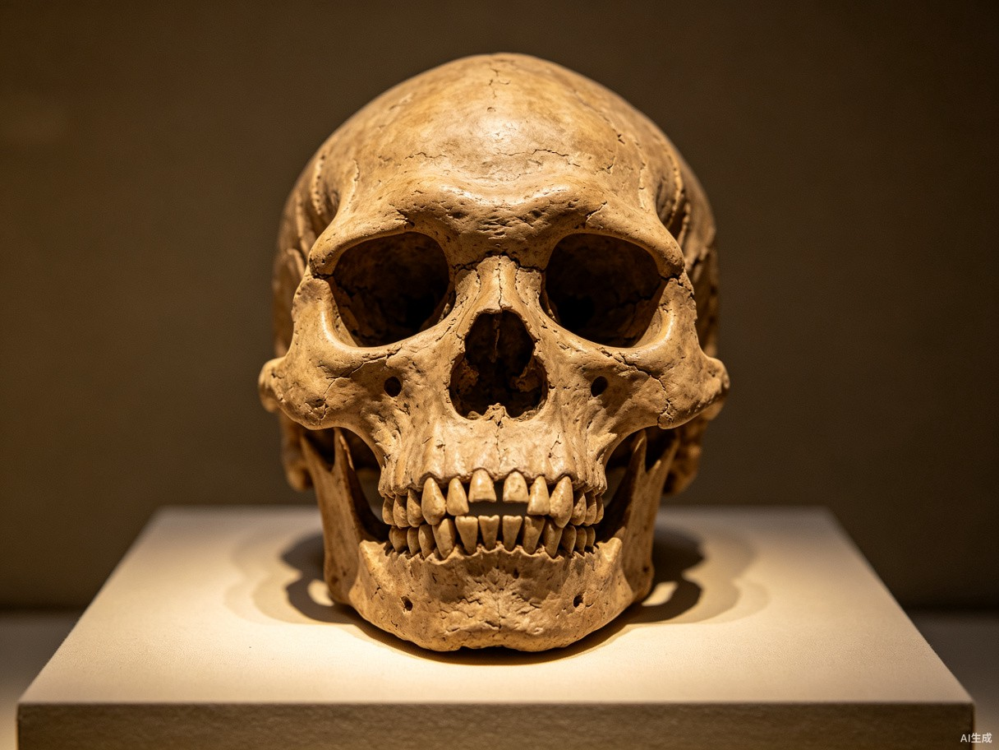
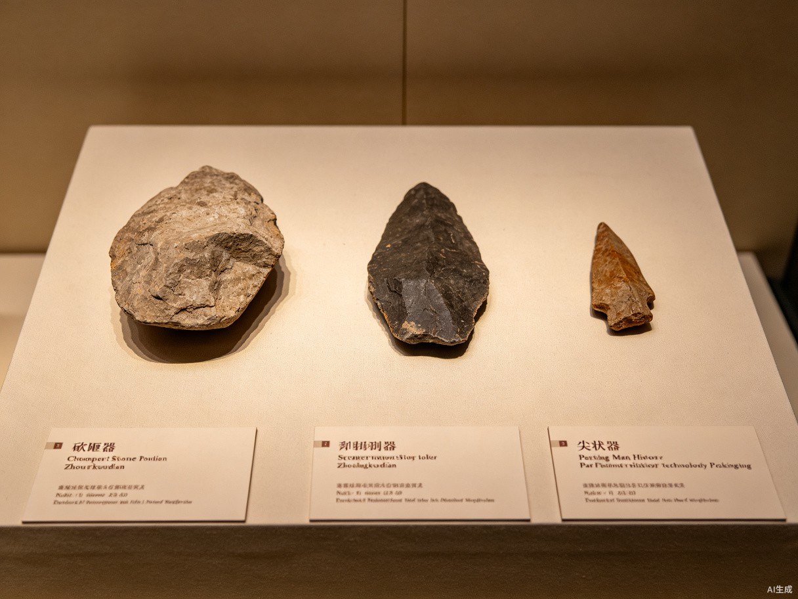

🎯 探究问题
先选一个你关心的问题。后面的例子、提示和AI学伴都会围绕这个问题来帮你推进。
👆 点击上方按钮查看问题
🎯 学习目标
- ✅ 知道北京人的发现地点和时间
- ✅ 了解北京人的体质特征和生活状况
- ✅ 理解北京人发现的意义
- ✅ 能区分旧石器时代与新石器时代
📝 前测：检验先备知识
难度递进： 基础 → 提高 → 挑战
1. 【⭐ 基础】中国境内已知最早的古人类是？基础
正确答案：C. 元谋人
元谋人生活在距今约170万年，发现于云南省元谋县，是中国境内目前已知最早的古人类。
| 名称 | 距今 | 地点 | 特征 |
|---|---|---|---|
| 元谋人 | ~170万年 | 云南元谋 | 最早 |
| 北京人 | 70~20万年 | 北京周口店 | 用火、打制石器 |
| 山顶洞人 | ~3万年 | 北京周口店 | 人工取火、磨制钻孔 |
📖 人教版七上 第2页
2. 【⭐ 基础】北京人遗址位于哪里？基础
正确答案：A. 北京市房山区周口店龙骨山
1921年瑞典地质学家安特生在此发现遗址；1929年裴文中发现第一个头盖骨化石。
3. 【⭐⭐ 提高】关于北京人的用火能力，正确的是？提高
正确答案：C. 会使用天然火并保存火种
北京人会利用自然界中的天然火（雷击、火山等），并能长期保存火种。但不会人工取火。
考试陷阱："北京人会人工取火"→ 错误❌
正确表述："北京人会使用天然火"✅ / "山顶洞人会人工取火"✅
4. 【⭐⭐⭐ 挑战】下列关于北京人的表述，全部正确的是？挑战
正确答案：C. 使用天然火 + 使用打制石器
这道题综合考查两个核心知识点：
- ✅ 用火：天然火（非人工取火）
- ✅ 工具：打制石器（旧石器，非磨制石器）
| 项目 | 旧石器时代 | 新石器时代 |
|---|---|---|
| 工具 | 打制石器 | 磨制石器 |
| 用火 | 天然火 | 人工取火 |
| 代表 | 北京人 | 半坡/河姆渡人 |
📚 北京人的发现
展开详细内容

图1-2 周口店北京人遗址——龙骨山第一地点（世界文化遗产）
📖 发现历程
1921年：瑞典地质学家安特生在北京市房山区周口店发现遗址。
1927年：开始系统发掘。
1929年：裴文中发现第一个北京人头盖骨化石，震惊世界。
1936年：贾兰坡发现3个完整的北京人头盖骨。
🧑 北京人的体质特征

图1-3 北京人复原图（标注主要特征）
🔍 体质特征
- 头骨：前额低平，眉骨粗大，颧骨高突，吻部前伸
- 脑容量：约1059毫升（现代人约1400毫升）
- 身高：男性约156厘米，女性约144厘米
- 四肢：上肢与现代人相似，能直立行走
保留猿类特征：北京人处于从猿到人的过渡阶段，头骨像猿，但四肢像人，证明了劳动创造了人本身。
🏕️ 北京人的生活状况
展开详细内容

图1-4 北京人使用的打制石器（砍砸器、刮削器、尖状器）
🛠️ 工具制作
北京人使用打制石器（旧石器），制作方法：
- 选取合适的石料（石英、燧石等）
- 用石块敲击打出粗糙形状
- 进一步打制出刃口和尖头
🔥 用火能力
重大意义：北京人已经会使用天然火，并能保存火种。
- 取暖御寒
- 照明驱兽
- 烧烤食物（改善营养，促进大脑发育）
考试中常出现"北京人已经会人工取火"这样的错误表述，一定要判断为错误！
正确的表述是："北京人已经会使用天然火"或"山顶洞人已经会人工取火"。
👥 社会组织
北京人过着群居生活，几十人一群，共同劳动，分享成果。
✅ 后测：检验学习成果
包含中考真题与高频考点分析，答错了会详细讲解错因！
1. 【⭐ 基础】北京人生活在距今约多少年？基础
正确答案：B. 约70万~20万年
北京人生活在距今约70万~20万年，跨越了50多万年，属于旧石器时代。
2. 【⭐⭐ 提高·中考真题】（2023·北京中考）下列关于北京人的叙述，正确的是？提高 📝 中考真题
正确答案：B. 上肢已具备现代人的特征
北京人的上肢已经与现代人非常相似，能灵活使用工具。但头部仍保留猿类特征。
来源：2023年北京市中考历史卷 · 第1题（改编）
考点：北京人的体质特征 —— 头部像猿，四肢像人
命题规律：中考常考查"北京人的哪些部位像人、哪些部位像猿"，需要准确记忆！
3. 【⭐⭐⭐ 挑战·中考真题】（2022·河南中考）下列不属于北京人遗址发现的是？挑战 📝 中考真题
正确答案：C. 磨制石器和陶器碎片
磨制石器和陶器是新石器时代的产物（如半坡、河姆渡遗址）。北京人属于旧石器时代，使用的是打制石器，不会制作陶器。
来源：2022年河南省中考历史卷 · 第3题（改编）
考点：区分旧石器与新石器时代的考古证据
4. 【⭐⭐⭐ 挑战·材料分析】阅读材料回答问题挑战 📋 材料题
根据材料，北京人的体质特征说明什么？
正确答案：B. 处于从猿到人的过渡阶段
材料对比了北京人的头部（像猿）和四肢（像人），说明他们正处于进化的中间状态。这证明了马克思主义的一个核心观点：劳动创造了人本身——在长期使用工具劳动的过程中，四肢先于头部完成了进化。
- 先读材料：圈出关键词（"前额低平""眉骨粗大"=像猿；"上肢具备现代人特征"=像人）
- 再联系课本：回忆"劳动创造人"这一核心观点
- 排除绝对选项：带"完全""彻底""所有"等绝对化词语的选项通常错误
材料分析题
阅读以下材料，回答问题：
材料：本课重点知识的实际应用案例（教师可替换为具体材料）
问题：结合材料和你所学知识，分析其中的关键概念。
开放性思考题
结合本课内容，谈谈你的理解和看法。
🎯 必考分析与考点总结
展开详细内容
必背结论：
- ✅ 北京人 → 使用天然火 ✅
- ❌ 北京人 → 人工取火 → 错误！ ❌
- ✅ 山顶洞人 → 人工取火 ✅
判断技巧：看到"北京人"→立刻想到旧石器=打制；看到"半坡/河姆渡"→立刻想到新石器=磨制
记忆口诀："低额粗眉无下巴，直立行走像人样"——头部像猿，四肢像人，证明劳动创造人。
时间线：1921安特生发现 → 1927系统发掘 → 1929裴文中头盖骨 → 1936贾兰坡更多化石
💡 考试常问"谁发现的第一个头盖骨？"答案：裴文中
| 题型 | 频率 | 考查方式 | 备考建议 |
|---|---|---|---|
| 选择题 | ★★★★★ | 判断正误（天然火/人工取火） | 死记硬背这组对比 |
| 材料题 | ★★★☆☆ | 给一段文字/图片，分析特征 | 学会"头猿四肢人"的分析法 |
| 填空题 | ★★☆☆☆ | 填时间/地点/人物 | 记住1929裴文中 |